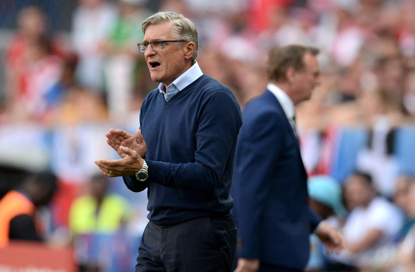

Adam Nawałka
Adam Nawałka jest trenerem reprezentacji
W 1978 znalazł się w kadrze, powołanej przez Jacka Gmocha na Mistrzostwa Świata. Podczas turnieju rozegrał pięć spotkań w pełnym wymiarze czasowym. Łącznie w zespole narodowym wystąpił 34 razy. Swojego jedynego gola w reprezentacji zdobył podczas przegranego 1:2 meczu z Węgrami, który był jednocześnie jego debiutem.
Ukończył Akademię Trenerską Polskiego Związku Piłki Nożnej, uzyskując tytuł trenera I klasy. Po powrocie do Polski, od 1996 trenował seniorski zespół Świtu Krzeszowice. W 1998 powrócił do Wisły Kraków, gdzie objął funkcję koordynatora do spraw szkolenia młodzieży. Przez pewien czas pełnił również funkcję trenera pierwszej drużyny, z którą zdobył wicemistrzostwo oraz mistrzostwo kraju, a także wywalczył Puchar Ligi. Przez pierwsze 10 kolejek sezonu 2002/03 Nawałka prowadził Zagłębie Lubin. Przed kolejnymi rozgrywkami objął trzecioligową Sandecję Nowy Sącz. 1 września 2004 został pierwszym szkoleniowcem Jagiellonii Białystok, jednak z tego klubu zwolniono go 20 kwietnia 2006 z powodu niezadowalających wyników. 19 grudnia 2006 roku ponownie objął Wisłę, jednak 16 kwietnia 2007 odsunięto go od prowadzenia drużyny.
28 maja 2007 został tymczasowo włączony do sztabu szkoleniowego reprezentacji Polski, gdzie zastąpił nieobecnego Dariusza Dziekanowskiego. Pomagał wówczas Leo Beenhakkerowi w przygotowaniach do meczów eliminacji Mistrzostw Europy z Azerbejdżanem i Armenią. W sierpniu 2007 podjęto decyzję, że Nawałka pozostanie w sztabie kadry do końca eliminacji. 21 września 2008 został trenerem GKS-u Katowice, gdzie pracował do 31 grudnia 2009. Wcześniej, 23 grudnia podpisał kontrakt z Górnikiem Zabrze, który to zespół objął ostatecznie 1 stycznia 2010. 1 czerwca 2010 awansował z tym klubem do Ekstraklasy.
26 października 2013 Nawałka został oficjalnie ogłoszony selekcjonerem reprezentacji Polski, którą to funkcję objął 1 listopada 2013. Wraz z objęciem nowej funkcji Nawałka przestał być trenerem Górnika Zabrze, mimo iż zapewniano, że zostanie on w Zabrzu do grudnia 2013. Ostatni mecz Nawałka w roli szkoleniowca Górnika rozegrał 28 października przeciwko Cracovii.
11 października 2015 po zwycięstwie 2:1 nad Irlandią Nawałka wywalczył z reprezentacją Polski awans do turnieju finałowego Euro 2016. Jest jedynym polskim trenerem w historii, który pokonał seniorską reprezentację Niemiec (2:0 w Warszawie). Jest także pierwszym w historii szkoleniowcem Reprezentacji Polski, który awansował z nią do ćwierćfinału mistrzostw Europy.
6 lipca 2016 PZPN poinformował, że przedłużył kontrakt z Adamem Nawałką do zakończenia eliminacji Mistrzostw Świata w Piłce Nożnej 2018, a w razie awansu (który wywalczył 8 października 2017) – do końca tego turnieju.